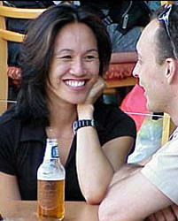

B- Entretenir la relation
La partie précédente portait sur la naissance d’une relation amoureuse. Elle explicitait les conditions favorables au développement d’un lien solide où les conjoints pourront vivre heureux ensemble. Mais ces étapes préliminaires ne suffisent pas à nous assurer le bonheur. Il faut encore nous assurer de garder cette relation vivante afin qu’elle continue de servir à l’épanouissement de chacun des deux partenaires.
1. Avoir tous les deux la volonté d’évoluer
Vivre une relation intime est un défi d’envergure. En accordant un accès en profondeur à notre personne, nous nous exposons à être bouleversé psychiquement et remis en question dans nos comportements et attitudes. Or il est normal de chercher à éviter l’ébranlement psychique. La plupart des gens ne veulent pas déranger l’équilibre confortable qu’ils se sont construit et cherchent naturellement à le rétablir au plus tôt s’il est dérangé. Pourtant, cet ébranlement peut s’avérer très profitable pour développer et maintenir une relation saine parce qu’il permet d’évoluer.
L’équilibre plus ou moins réussi auquel nous sommes parvenus une fois adulte est le fruit d’une série d’adaptations effectuées au contact de notre famille et en particulier de ceux qui nous ont servi de parents. En général, le degré de développement atteint laisse à désirer car nous n’avons pas encore la capacité d’être totalement nous-même et de nous affirmer comme tel devant les personnes importantes de notre vie. C’est à travers la résolution de nos transferts que nous parvenons à étendre notre liberté.
Lorsque nous choisissons un partenaire de vie, c’est en partie pour résoudre un transfert et cela sans que nous en soyons nécessairement conscient. C’est pourquoi il est important d’accepter d’être bouleversé et remis en question dans la relation. C’est une condition “sine qua non” pour assurer notre évolution personnelle et interpersonnelle. (Voir «Le défi des relations: comment résoudre nos transferts affectifs» à paraître aux Editions de l’Homme fin septembre 2004.)
Pour que la relation nous amène à évoluer, il faut accepter d’être remis en question. Cela implique de faire preuve d’ouverture pour «entendre» les critiques, les reproches ou les “feedbacks”. Naturellement, nous aurions plutôt tendance à prendre une posture défensive pour contester les commentaires ou questionner la légitimité de cette façon de s’adresser à nous. «De quel droit me parles-tu de la sorte?»
On s’attend généralement à ce qu’une telle réaction mette un terne à l’échange (et c’est ce qui se produit le plus souvent). Avec le temps et l’accumulation des interactions de ce type, certains couples en viennent à bannir leur esprit critique l’un face à l’autre. Cette tactique permet d’éviter les altercations, mais elle garantit par le fait même la stagnation de l’individu et, par ricochet, de la relation.
L’ouverture implique aussi d’accepter que notre partenaire ait des réactions fortes à notre égard, notamment qu’il se mette en colère. Mais dans beaucoup de couples, l’expression de la colère est complètement interdite. («Si tu penses que je vais me laisser parler sur ce ton!») Les femmes surtout, l’associent faussement à un manque de respect, même lorsque c’est elles qui l’ont provoquée. Elles réagissent comme s’il ne devait pas y avoir de conséquences proportionnelles à leurs actes; elles s’attendent à ce que la conséquence (la réaction de l’autre) soit tamisée, édulcorée afin de les épargner. (Voir «Querelles et chicanes dans le couple».)
La remise en question personnelle
Lorsque nous sommes en conflit avec quelqu’un, la plupart d’entre nous avons tendance à en chercher la cause chez l’autre, oubliant temporairement que toute relation est une réalité dynamique qui implique un jeu de forces entre tous les interlocuteurs et donc que nous sommes pour quelque chose dans la naissance de ce conflit. C’est également ce que nous faisons dans la relation conjugale, même si le lien est plus intense que dans nos autres relations.
Nous éviterions beaucoup de discussions et de querelles stériles si, avant d’accuser notre partenaire, nous procédions à un examen pour identifier notre contribution au problème. Peu importe que nos accusations soient explicites ou implicites, peu importe qu’elles soient justifiées ou non, si elles sont d’abord le reflet de notre fermeture devant une remise en question, elles sont toxiques pour la relation.
Chacun a son existence propre en dehors de sa vie de couple. Chacun d’entre nous a des aspirations qui lui sont propres, des besoins personnels et un potentiel unique à actualiser. Pour assurer sa croissance comme individu, la liberté de chacun doit être protégée à tout prix. Si la relation conjugale constitue, de quelque façon, un obstacle à l’évolution individuelle, c’est la santé de l’individu qui est en péril et, par ricochet, celle de la relation.
Ces obstacles à l’épanouissement individuel peuvent être posés par le partenaire de plusieurs façons. On peut par exemple décourager son conjoint de s’impliquer vraiment dans ses entreprises sous prétexte qu’elles sont irréalistes alors qu’en réalité c’est parce qu’elles nous menacent. La compétition malsaine est un autre exemple fréquent. Elle consiste à “abattre” l’autre parce que sa réussite nous menace ou nous amènerait à faire des efforts supplémentaires pour nous sentir aussi adéquat que lui. Cette réaction s’oppose diamétralement à la compétition de type émulation qui elle invite à l’élévation et au dépassement de soi. L’obstruction qu’on fait pour nuire au succès du partenaire est généralement subtile et met parfois un certain temps à donner ses résultats néfastes. Pour cette raison, il faut se méfier des interventions de notre partenaire qui tendent à nous “tirer vers le bas”. Il est important de soulever cette question dès qu’on commence à en ressentir les effets inhibiteurs.
2. Prendre soin de la relation
Pour maintenir la qualité de la relation, il ne suffit pas d’adopter les attitudes d’ouverture qui sont favorables au développement des deux individus et du couple. Il faut aussi travailler activement à résoudre les problèmes et à se donner des conditions propices pour maintenir la force du lien.
Intervenir sur les choses importantes
Chaque couple est composé de deux êtres différents qui, par définition, n’accordent pas la même importance à tous les aspects de la vie. Certaines choses importent nécessairement à l’un et pas à l’autre. Ce fait inéluctable donne lieu, chez certains couples, à des altercations répétées. Typiquement, l’un des deux est alors convaincu que son point de vue est le bon et, par conséquent, que l’autre devrait s’y ranger. Malheureusement, l’autre pense la même chose (c’est forcément le cas lorsque les multiples discussions ne l’ont pas convaincu de changer).
Les questions domestiques comme le rangement et l’entretien font partie des sujets avec lesquels des couples s’empoisonnent la vie.
«Tu devrais ranger tes vêtements. J’en ai assez de les voir traîner par terre!»
«Il faut faire le ménage et la lessive tous les samedis.»
«Que cela te plaise ou non, il faut faire ensemble toutes les tâches domestiques.»
Parmi les autres sujets de litiges les plus importants, on peut mentionner la vie sexuelle et l’expression de l’affection. Mais on évite très souvent de les aborder de front. Les principes d’éducation, pour leur part, peuvent souvent donner lieu à des débats vigoureux, du moins tant que l’un des deux n’a pas jeté la serviette, épuisé devant la rigidité de son partenaire.
Lorsque la complicité est grande entre les partenaires, le couple ne s’épuise pas sur tous les sujets de désaccord. Chacun renonce à agir sur les points qui lui semblent secondaires et conserve son énergie pour réagir sur les questions qui ont une importance primordiale. Il arrive aussi que l’un ou l’autre assume sa préférence en appliquant lui-même la solution qui lui convient au lieu d’attendre que l’autre l’adopte.
«Elle est indifférente à l’ordre et à la propreté et mes récriminations n’ont aucun écho chez elle. Je prends donc sur moi de voir à ce que notre lieu de vie me convienne. Je ferai moi-même le rangement nécessaire ou je paierai quelqu’un pour s’occuper de l’entretien.»
Bien entendu une telle option peut s’accompagner d’une dose d’amertume. Il est parfois tentant de «faire payer» l’autre pour son manque de collaboration à satisfaire nos besoins. Ce désir de vengeance serait un bien mauvais conseiller si on veut une relation en santé car il créerait de nouveaux conflits bien plus graves que les précédents. Dans une telle situation, l’amertume doit être considérée comme le symptôme d’un déséquilibre qui mérite d’être abordé et résolu à deux.
Quiconque est convaincu que ses besoins lui appartiennent et qu’il est le seul responsable de les satisfaire choisit sereinement d’assumer sa préférence, même lorsque cela lui pèse. Bien sûr, ce serait plus facile si l’autre avait le même besoin et se rendait automatiquement à son désir, mais il est plus efficace d’assumer son besoin que de s’épuiser à convaincre un autre d’y répondre ou d’empoisonner la relation en obtenant qu’il s’y conforme pour avoir la paix. Voir «Porter la responsabilité de ses besoins»...
Régler les problèmes dès leur apparition
En couple comme dans les autres aspects de notre vie, les problèmes qu’on néglige de régler ne disparaissent pas. Au contraire, ils prennent souvent de l’ampleur avec le temps et servent de terrain fertile à d’autres problèmes qui viennent s’y greffer. Ainsi, plus le temps passe et plus on a tendance à tenter de les mettre au rancard ou simplement à les ruminer. Le plus désolant c’est que, très souvent, ces problèmes reposent sur un malentendu qu’il aurait été facile de clarifier au moment où il s’est produit. (Voir “Conflits interpersonnels au travail : I Les malentendus” .)
| Intervention sur le champ |
| Lui: |
«Je n’aime pas que tu me traites de fainéant comme tu l’as fait tout à l’heure.» |
| Elle: |
«Je suis désolée, je n’aurais pas dû employer ce terme. J’étais hors de moi et mes paroles ont dépassé ma pensée. Ce n’est vraiment pas l’opinion que j’ai de toi. J’ai été injuste.» |
| Intervention deux ans plus tard |
| Lui: |
«Je t’en veux toujours pour la fois où tu m’as dit: “Retourne à ta télé espèce de fainéant!”» |
| Elle: |
«Moi j’ai dit cela? Je n’en ai aucun souvenir.» |
Pendant ces deux ans, il faisait la grève du zèle en réponse à cette altercation. Elle était de plus en plus elle est irritée par cette résistance passive. Aussi lui arrivait-il de le traiter de paresseux. Selon lui, ces propos confirmaient l’exactitude de l’insulte initiale; ils alimentaient donc son ressentiment.
Pour adopter l’habitude de régler les litiges dès qu’ils se présentent, il faut être vraiment convaincu de l’importance de le faire. On trouve toujours très facilement de bonnes raisons pour remettre cette tâche au lendemain. Il faut aussi une certaine dose de courage parce que la solution nécessite un affrontement dont nous ne connaissons pas l’issue. C’est pourquoi la répétition des tentatives est nécessaire pour acquérir cette conviction; il faut la valider par l’expérience avant d’arriver à une certitude. Pas étonnant que la méthode de l’évitement demeure de loin la plus populaire, malgré ses conséquences désastreuses à moyen terme.
La confrontation directe avec le partenaire est difficile, particulièrement si on veut la faire avec l’ouverture propice à un résultat favorable. Il est bien plus facile et tentant de se replier sur soi et de laisser passer. C’est le choix typique des hommes qui ne sont pas habiles à exprimer leurs sentiments ou qui répugnent à déranger ou à attaquer verbalement leur femme. Pour éviter l’affrontement les femmes ont plus souvent tendance à choisir de s’épancher auprès de leurs amies. Typiquement elles se plaignent de leur mari et sollicitent des conseils qu’elles suivent rarement.
Tout comme le silence volontaire ne résout rien, nous savons que le fait de parler “à une tierce personne” ne pourra jamais régler notre problème avec notre partenaire. En faisant ce choix, nous nous condamnons à répéter cette solution “ad vitam aeternam” pendant que le problème dégénère.
Ménager du temps pour la vie de couple
Les enfants et le travail rivalisent généralement pour s’accaparer notre attention et brûler notre énergie. Comment se soustraire aux sollicitations pour s’accorder du temps comme couple? Comment confronter ses angoisses devant la possibilité de confier le bébé aux bons soins de quelqu’un d’autre ou devant la décision de remettre un travail à plus tard pour s’offrir un week-end en tête à tête? Sans compter les invitations des amis et les activités de loisir de chacun.
Les sollicitations extérieures prendront toujours le dessus à moins que chacun des conjoints ne considère sa vie de couple comme une priorité, comme un bien précieux qui doit être protégé. Car les embûches sont nombreuses et la routine plus forte que bien des bonnes volontés.
Mais nous ne pouvons faire l’économie d’investir dans notre vie de couple sans payer éventuellement un gros prix: celui de se retrouver un jour devant un étranger. Et, en attendant ce pénible constat, il faut considérer aussi la privation des marques d’affection et de considération qui constituent une nourriture affective nécessaire au quotidien.
Les moments d’intimité, à la maison ou en escapade, ne sont pas optionnels pour qui tient à son partenaire. Mais pour éviter de les négliger, il faut parfois que l’un des deux prenne l’initiative de les provoquer, au risque de forcer l’autre à sortir de son carcan routinier. Il est même avantageux de confronter le partenaire résistant en questionnant ses “angoisses” et en le poussant à examiner ses problèmes personnels qui les alimentent.
Manifestations d’intérêt et d’affection
Pour certains, c’est l’habitude de vivre ensemble qui éteint les manifestations d’intérêt, de désir et d’affection. Selon eux, les touchers spontanés, les baisers sans raison apparente, les témoignages d’attrait physique hors des rapports sexuels sont l’apanage des débuts de relation. Rien d’étonnant à ce que plusieurs d’entre eux n’envisagent le renouveau de la vie de couple que dans la découverte d’un nouveau partenaire. C’est ainsi qu’ils permettent à une relation pourtant nourrissante au départ de s’effriter complètement.
Ce n’est pas le temps qui réduite en miettes une relation amoureuse dans laquelle les partenaires étaient au départ bien agencés. C’est la négligence. La négligence qui a permis l’accumulation de problèmes non résolus à un tel point que la distance entre les partenaires est trop importante pour qu’ils puissent se montrer sincèrement aimants. Ou encore la négligence subtile par laquelle ils ont cessé de pimenter leurs rapport une fois l’autre conquis.
 Il peut être rassurant d’avoir l’impression que son partenaire est “conquis” à jamais, mais c’est toujours néfaste pour la relation. Il vaut beaucoup mieux que l’engagement ou le désir de continuer de vivre ensemble soit un choix perpétuel. Pourquoi en est-il ainsi? Parce que l’engagement à aimer est un non sens. Il est impossible pour quiconque de prédire ses sentiments futurs. C’est impossible d’une part parce que, comme tous les êtres vivants, nous sommes en changement continuel et d’autre part, parce que nous ne connaissons d’avance ni les événements qui surviendront, ni les comportements de l’autre devant les situations que nous ne connaissons pas encore. Par exemple, il arrive souvent qu’un homme en vienne à détester une femme qu’il aimait à la folie. C’est ce qui survient le plus souvent lorsqu’il se fait empoisonner durant des années par sa jalousie posse
Le fait d’accepter de vivre dans un cadre où l’autre n’est jamais définitivement acquis nous incite nécessairement à prendre soin de la relation et à songer aux conséquences de nos actes. Cela nous tient en alerte et nous amène à respecter l’autre comme une personne distincte!
|
|